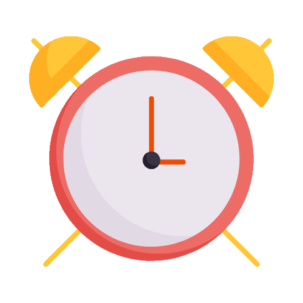

Windows
Windows 10 and 11
Download .exeUnsigned app: if SmartScreen warns, click More info → Run anyway.

Water Reminder lives in your system tray and pops up a small, friendly reminder to drink water at the interval you choose. It never steals focus, and it's free.
Latest release on GitHub
No Node.js or anything else needed — the installer includes everything.
Windows 10 and 11
Download .exeUnsigned app: if SmartScreen warns, click More info → Run anyway.
Intel and Apple silicon
Download .dmgUnsigned app: right-click it → Open the first time.
Ubuntu / Debian, or any distro
Download .deb Download AppImageAll versions are on the releases page.